Let us Dive into all things football in this page. Get assured to receive
quality news regarding sports from our page as well our patner pages. We
get all the news,and give it to you for your enjoyment. So to all our
sports lovers,sit back,relax and read on!
CONTENTS
Transfer News
Premier league news
La Liga News
Bundesliga News
Subscription Packages
Subscription form
Transfer News
After the Winter transfer season came to an end with many suprising transfers,many
football fans are waiting eargerly for the summer transfers. Although many speculations
already been made regarding players such as Alphonso Davies,Armando Broja and Victor
Osimhen,nothing is yet to be confirmed. No comment has been made from the players or
the agents.
However,some transfers really look inevitable. Some players have already made their
stand that they would not be remaining at their current club after the end of this
current season. An example would be Kyllian Mbappe. The young French player has already
made his choice and has confirmed that he will be leaving Paris St Germain this
summer. Actions from the player himself and the coach,Luis Enrique have proven that the
player will indeed be leaving. This has been due to Mbappe's surprising subtitutions and
his recent actions one of them being that after his substitution at half time,he did not join
fellow players at the bench but he instead changed and went to join his mother at the stands
to watch the game. According to Fabrizio Romano,Luis Enrique is trying to get the teammates to
get used to playing without Mbappe. The likely successor to the iconic Number Seven shirt is
Ousmane Dembele. Mbappe is suspected to be moving to Real Madrid and some think that the contact
has already been finalized.
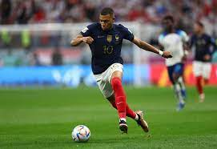
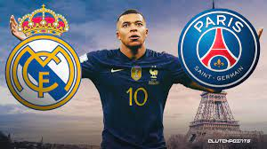
Premier league News
In what some claim to be the greatest league in the world, there is no shortage of news.
Kobbie Mainnoo
It has been an Exciting week for the teenager who has been shining in the Manchester United
first squad ever since his debut earlier thsi year.The teenager has been shining alongside fellow
youngsters,Rasmus Hoijlund and Alejandro Garnacho. It came as a surprise to many that Gareth Southgate,
the Head coach for the England National Team had not included the player in the squad for the upcoming
international games,the youngster had however his U-21 call up. Many were elated when they had that
Gareth Southgate had reconsidered and added Mainoo to the squad. Many are eager to see the player shine on
the international stage.
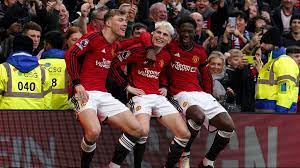
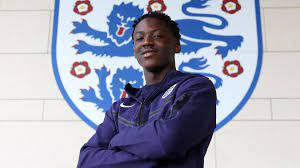
Chelsea Chaos
It has been evident that the club has not been the same since the entry of Tod Boyle and the exit of Thomas
Tuchel. Ever since their magical 2020/21 season,all has gone downhill. The club has strugged to reach the
champions league level. Former Manager Graham Potter did nothing much. Current manager,Mauricio Pochettino
is trying but the club has still yet to recover its top level as it currently sits at 11th
position
in the league standings. The Manager is still trying but as of now his future at chelsea is uncertain.
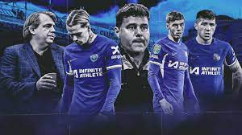
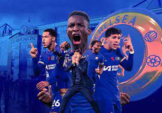
Liverpool
You Will Never Walk Alone. The word of the club. It ahs been a very fulfilling club ever since the entry of
Jurgen Klopp. All Football fans around the world were shocked when they received Kloop's message that he
will
be leaving at the end of the season. Fans were dissapointed and devastated that their beloved coach would be
leaving
them.He promised that he would never join any other football club. As of now,Liverpool's next Manager is
still
unknown but there are speculations that he will be succeded by Xabi Alonso,Bayer Levurkusen's coach who is
having a
wonderful season at the bundesliga club. But still no confirmations have been made and we are still waiting
till the
end of the season.
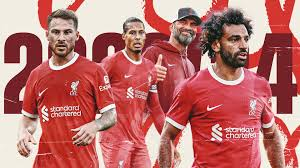
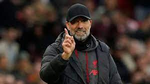
La Liga News
The Liga is always filled with controversial matches. Week by week different clubs complian about the
referres. Let us dive
into them and see what's been up in Spain.
Real Madrid
La Liga's number one club has been on a roll. The club is currently sitting at the top of the la liga table
and is leading
with 8 points ahead of second palce Barcelona and third palce Girona who are also having a great season.
However it has not
been all fun and games as the club is still having a lot of senior players who are also nursing injuries.
The players nursing
injuries include;
Injury List
Player
Injury
Expected return
Eder Militao
Cruciate Ligament Rupture
Late March
David Alaba
Next Season
Vinicius Juniuor
Disciplinary Actions
Unknown
Alvaro Carrillo
Thibaut Courtois
Torn Meniscus
Next season
Joselu Mato
Gastrointestinal discomfort
Danny Ceballos
Knee Injury
April
Although they are having a major injury and suspension list,the club is still shinning as the head coach
Carlo Anchelloti has
decided to use his up coming stars such as Arda Guler who scored his first goal against Rayo Vallecano.
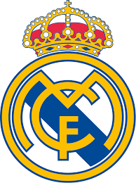
Referres
The La liga referre are a controverisal topic. Week after week,clubs are filing complaints againsts referres
poor decisons. The most recent
complaint filed was for Real Madrid against the referre who oversaw theie match against Valencia. Real
Madrid claimed that the referre did a
mistake after denying Jude Bellingham a match winner against Valencia which led to them havind a 2-2 draw.
Even after being denied the goal,
Jude bellingham went on to further get a red card after expressing his anger to the Referre. He still has a
one-match ban. Coincidentally,this
came after Jude had just come back from a minor injury.
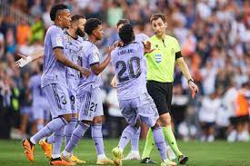
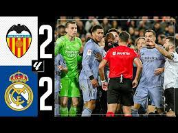
Bundesliga News
The race for the Bundesliga cup is on and on fire. The two main contenders being Bayern Munich and Bayer
Leverkusen with Bayern Levurkusen
being the top contentenders as they have a 10 point lead against current holders Bayern Munich.
Bayer Levurkusen
Xabi Alonso's boys are currently on a roll. The team is currently on a no-lose-streak and they have broken Munich's record
since Hansi Flick's Era. Xabi is definitely enjoying his time at Levurkusen. He has undoubtedly been one of the most successful
managers. However, the status of the coach at Leverkusen is still unknown as there are rumours that he could be leaving to Liverpool
following Klopp's depature. However,nothing is yet to be confirmed.
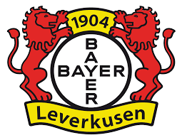
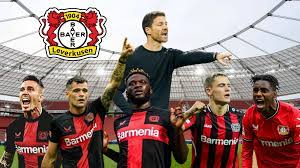
Bayern Munich
Bayern Munich is having a rollercoaster season. Despite them having the most goals scored this season and the highest goal scrorer,
Harry Kane,they are still yet to close their 10 point gap against Leverkusen. The manager,Thomas Tuchel is still in the hot seat and
has already declared that he will be leaving the club at the end of the season. Despite this, Bayern are still hopeful that they will
close the gap and beat Leverkusen to the cup. If they do not do so,it will be their first season in twenty years to have a trophyless
season.
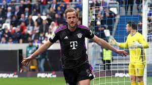
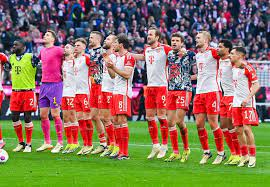
Borrusia Dortmound
The team has brought in Jadon Sancho on loan from Manchester where the young progidy had had a wrangle with the administration due to
Disciplinary behaviours. However,it seems that the English man is enjoyin his time there as he has gotten 3 assists and one champions
league goal. However Dortmound has not made any move to sign the player on a permanent deal from United.
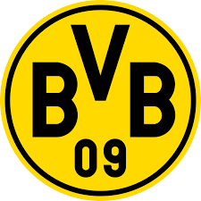
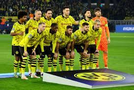
Subscription Packages
Package
Price
Gold
10000/=
Silver
5000/=
Bronze
2500/=
Registration Form
If you are intrested in being the first to get all the latest sports news,sign up on the
registration form below.